Environmental change before and after the First Pandemic
Fossil-pollen evidence for land use in Europe and the Mediterranean, 250–900 CE. Final report.
Abstract
The First Pandemic of plague (541–750 CE) is often thought to have emptied the countryside of the late Roman world, but its arrival coincided with the coldest decades of the Common Era, the Late Antique Little Ice Age (LALIA, 536–660 CE). We used fossil pollen to test whether land use changed after 541 and whether a change can be told apart from climate. From the Neotoma database we assembled 12,508 pollen samples dated 0–1200 CE from 1,064 records at 984 sites in Europe, the Mediterranean and the Near East; 281 sites have at least two samples both before (400–540 CE) and after (541–750 CE) the arrival of plague. Across these sites, cereal, pastoral and all anthropogenic indicators rose after 541 (all anthropogenic indicators +0.28 percentage points, p < 0.001) and natural tree pollen fell (−0.70 points, p = 0.004), faster than in the preceding period. Measured against the long rise of land use between 300 and 900 CE, the first century of plague (550–650 CE) shows a small shortfall (−0.12 standard deviations, p = 0.024), statistically detectable only in western and central Europe and not explained by reconstructed summer temperature; it disappears if the long-term trend is allowed to curve. In the Eastern Mediterranean the expanded sample (23 core sites, up from 13; 52 under a relaxed rule) shows no significant fall in farming or arboriculture after 541; cultivated-tree pollen there was already lower after about 425 CE, while a cave record in SW Turkey shows conditions becoming drier. The HYDE 3.2 land-use model has cropland falling at 85% of sites, where cereal pollen fell at 30%. The Europe-wide rises in cereal and all anthropogenic indicators and the fall in natural trees stay significant in 94–100% of 1,000 Monte Carlo realisations of the age models. The plague left no continental footprint of farmland abandonment in the pollen record.
Key findings
- No abandonment after 541. Cereal, pastoral and all anthropogenic pollen rose at most of the 281 sites and natural tree pollen fell, faster than between 250–399 and 400–540 CE.
- A pause, not a collapse. Relative to the 300–900 CE trend, the farming indicators sat about 0.12 SD lower in 550–650 CE and were back on trend in 650–750. The shortfall is significant only in western and central Europe and disappears with a curved (quadratic) trend.
- No detectable temperature effect. Within 300–900 CE, reconstructed European summer temperature has no significant effect on any indicator in any regression specification.
- The Eastern Mediterranean shows no significant post-541 decline. With 23 core sites, no farming indicator changes significantly; cultivated-tree pollen had peaked around 400–425 CE and was already lower before the plague.
- HYDE 3.2 cropland moves the wrong way. The model, which follows historical population estimates, has cropland shrinking after 541 at 85% of sites while cereal pollen grew at most of them. HYDE grazing land, in contrast, rises, like the pastoral pollen.
1Introduction
The First Pandemic began in 541 CE when Yersinia pestis reached Pelusium in Egypt. It struck Constantinople in 542 and returned in waves for two centuries, until about 750 (Little 2007). Ancient DNA has confirmed the pathogen in burials from Britain, France, Spain and Germany (Keller et al. 2019). Contemporary writers describe catastrophic mortality, and the pandemic has often been blamed for the contraction of the late Roman economy. The same years saw volcanic eruptions in 536, 540 and 547 (Sigl et al. 2015) that started the Late Antique Little Ice Age (Büntgen et al. 2016). In the Alpine tree-ring record we use, the 31-year mean summer temperature fell by 1.5 °C between 509 and 552 CE (Fig. 2e). Because the two shocks overlap almost exactly, it is hard to say which one, if either, changed how people used the land.
Fossil pollen preserved in lake and bog sediments records the vegetation around each site. Pollen of cereals, of cultivated trees (olive, walnut, chestnut and vine) and of plants that thrive in grazed meadows (ribwort plantain and sorrel) tracks farming, while the share of other tree and shrub pollen tracks how much woodland remained (Behre 1981; Mercuri et al. 2013). If plague mortality left fields abandoned, the farming indicators should fall and tree pollen should rise after 541. Mordechai et al. (2019) combined pollen, papyri, laws, coins and inscriptions and found continuity rather than collapse. Izdebski et al. (2022) used pollen in a similar way to show that the Black Death of 1347–1352 left a strongly uneven footprint on European land use, so the method can detect a pandemic where it mattered.
This project (course project 18) asks whether vegetation, agriculture or land use changed substantially before and after the pandemic, and whether palaeoecological evidence can separate demographic effects from climatic change. We ask three questions. (1) Did land-use indicators change after 541? (2) Can a change be separated from the LALIA? (3) Does the most widely used reconstruction of historical land use, HYDE 3.2 (Klein Goldewijk et al. 2017), agree with the pollen? The mid-term evaluation answered the first question for 164 records. This report adds regional climate records, a regression that separates temperature from the plague period, an expanded Eastern Mediterranean sample, a Monte Carlo treatment of dating uncertainty and the comparison with HYDE, and it corrects the sample for duplicate records (Section 2.1).
2Data
2.1 Pollen records
We queried the Neotoma Paleoecology Database (Williams et al. 2018) for every pollen dataset located between 10°W and 50°E and between 30°N and 56°N whose calendar-scale age range covers 400–750 CE: 1,099 datasets. For each sample we used the age from the dataset's default chronology in Neotoma, accepting calibrated-radiocarbon, calendar, varve and AD/BC age scales, and kept samples dated 0–1200 CE with at least 100 terrestrial pollen grains. Two corrections followed. First, Neotoma holds some cores twice (for example an original upload and a later copy); 14 records whose samples largely repeat those of another record at the same site were removed. Second, many lakes have more than one core; records with the same site name within 2 km were pooled into one site, so that every lake or bog counts once. The result is 12,508 samples from 1,064 records at 984 sites. A core site has at least two samples in both 400–540 and 541–750 CE; there are 281, built from 335 records (40 sites have more than one core), with a median of 3 samples in the earlier window and 4 in the later one (Fig. 1, Table 1).
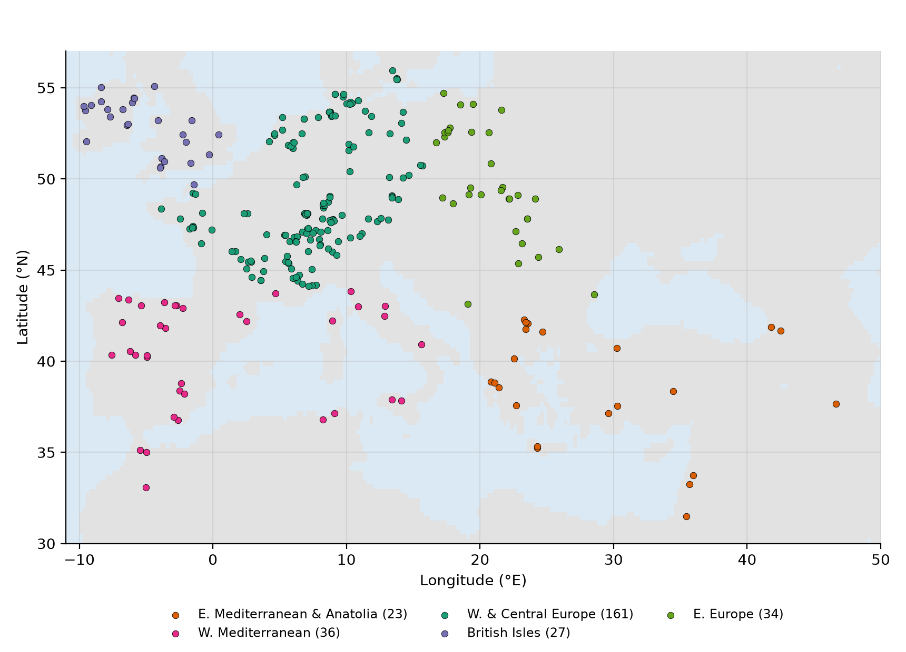
| Item | Mid-term | Final |
|---|---|---|
| Neotoma datasets in the query | 891 | 1,099 |
| Records with usable samples | 671 | 1,064 |
| Sites | – | 984 |
| Samples, 0–1200 CE | 7,517 | 12,508 |
| Core records / core sites | 164 / 159 | 335 / 281 |
| W. & Central Europe | 94 records | 161 sites |
| W. Mediterranean | 22 records | 36 sites |
| E. Europe | 18 records | 34 sites |
| British Isles | 17 records | 27 sites |
| E. Mediterranean & Anatolia | 13 records | 23 sites |
| Median age-model half-range at core sites that report one, 400–750 CE | 190 yr | 176 yr (116 sites) |
2.2 Land-use indicators
All indicators are percentages of the terrestrial pollen sum (trees, shrubs and upland herbs). Cereal: Cerealia-type, Secale, Triticum, Hordeum, Avena. Cultivated trees (the OJCV group): Olea, Juglans, Castanea, Vitis. Pastoral: Plantago lanceolata, Rumex acetosa/acetosella and undifferentiated Rumex. All anthropogenic: the sum of the three. Natural trees and shrubs: tree and shrub pollen minus the cultivated trees. Richness: rarefied taxon richness at 100 grains, E(S100) (Hurlbert 1971).
2.3 Regions
Sites are grouped by coordinates, as at mid-term. E. Mediterranean & Anatolia: south of 43°N and east of 19°E (Greece and Crete, southern Bulgaria, Turkey, the Levant, Georgia and north-western Iran; the only core site east of 44°E is Lake Almalou in Iran). W. Mediterranean: south of 44°N and west of 19°E (Iberia, southern France, Italy, North Africa). British Isles: west of 2°E and north of 49.5°N. W. & Central Europe: the rest west of 16°E. E. Europe: the rest east of 16°E.
2.4 Climate records
We used four reconstructions from NOAA Paleoclimatology. (1) Central European June–August temperature from Alpine tree rings (Büntgen et al. 2011). (2) The PAGES 2k Euro-Med reconstruction of European mean June–August temperature (Luterbacher et al. 2016), in its composite-plus-scale (CPS) and Bayesian hierarchical (BHM) versions; its gridded field starts in 755 CE, so for our period the European mean is the series available. (3) Oxygen and carbon isotopes from a stalagmite in Kocain Cave, SW Turkey (Jacobson et al. 2021): 93 analyses between 200 and 1000 CE, one per 8.5 years on average; higher δ18O and δ13C mean drier conditions. (4) Oxygen isotopes from Soreq Cave, Israel (Orland et al. 2009): 132 ion-microprobe analyses between 200 and 1000 CE, unevenly spaced: 38 fall in 330–460 CE but only 4 in 541–660 CE, and 9 of the 32 25-year bins in 200–1000 CE contain no measurement.
2.5 HYDE 3.2
HYDE 3.2.1 (Klein Goldewijk et al. 2017) estimates cropland, grazing land and population on a 5-arc-minute grid (about 9 km) at 100-year steps before 1700 CE. It starts from historical population estimates for each country and allocates land use in proportion to population and land suitability. We read the 200–1000 CE grids from the published archive and computed, for each pollen site, the share of land under cropland and under grazing and the mean population density within 25, 50 and 100 km.
3Methods
3.1 Before/after comparison
For each core site we averaged each indicator over 400–540 and over 541–750 CE (a sample belongs to 400–540 if its age is at least 400 and below 541, and so on) and took the difference. We tested whether the median difference across sites is zero with the paired Wilcoxon signed-rank test and bootstrapped its 95% confidence interval (2,000 resamples of sites).
3.2 Placebo and sensitivity tests
The placebo test asks whether the change across 541 is faster than the change in the preceding period, 250–399 to 400–540 CE, at the 226 core sites with at least two samples in 250–399. Because the window midpoints are 175.5 years apart across 541 but 145.5 years apart in the placebo comparison, a steady trend alone would make the change across 541 look larger; we therefore compare rates of change per century (paired Wilcoxon test). Sensitivity tests use narrower windows (450–540 against 541–640), only the first 60 years of plague (450–540 against 541–600), boundaries 50 years earlier or later, and the plague period against the following period (751–900).
3.3 Composites and climate correlations
Each indicator was converted to z-scores within each site, averaged into 25-year bins and then across sites, with bootstrap confidence intervals. We correlated these composites with the climate series (bin means; climate gaps filled by linear interpolation) over 200–1000 and 300–900 CE, with and without removing linear trends, and computed p-values from the effective sample size of two autocorrelated series (Bretherton et al. 1999).
3.4 Regression of land use on temperature and plague period
For the core sites we fitted, to the site z-scores in 25-year bins between 300 and 900 CE (24 bins),
zst = αs + βT·Tt + βP·Pt + γ·t + εst,
where αs is a fixed effect for each site, Tt the PAGES 2k European summer temperature (CPS) for the bin in standard-deviation units (1 SD = 0.22 °C over 300–900 CE), Pt is 1 for the eight bins of 550–750 CE (the bin of 525–550 CE, which contains 541, counts as before), and t a linear trend in centuries. The trend matters because land use rose steadily through the first millennium. Standard errors are clustered both by site and by bin (Cameron et al. 2011). The two predictors are only weakly correlated (r = 0.10) because the 4th century was as cool as the LALIA in the European mean and the late 7th century was warm. Variants: M2 splits the plague period at 650 CE into a first century (550–650, the plague waves inside the LALIA) and a second (650–750); M3 uses the Alpine temperature series; M4 adds temperature lagged by 25 years; M5 uses a quadratic trend; M6 drops climate; M7 adds Kocain moisture for the Eastern Mediterranean sites; M8 widens the window to 200–1000 CE. M1 and M2 were also fitted for each region. Sites whose indicator never varies are left out of that indicator's model.
3.5 HYDE comparison
In space, we computed Spearman correlations across sites between HYDE land-use shares and the pollen indicators in 400–540 CE. In time, we interpolated HYDE linearly between its 100-year steps, averaged it over the two windows, and asked whether HYDE and pollen change in the same direction at each site.
3.6 Expanded Eastern Mediterranean sample
The mid-term pipeline missed two kinds of record: records stored in Neotoma with a polygon outline (usually a lake) rather than a point, which were skipped, and records with calendar or varve chronologies, such as Nar Gölü in Cappadocia (England et al. 2008) and Bereket near Sagalassos (Kaniewski et al. 2007), which the age filter excluded. After the fix, 862 of the 891 datasets in the mid-term list yield usable samples (mid-term: 671). In the Eastern Mediterranean we repeated every test for the mid-term sites, for all core sites and for a relaxed rule of at least one sample in each window.
3.7 Monte Carlo on dating uncertainty
The median age uncertainty at the core sites that report one (±176 years) is comparable to the windows, so a sample dated 520 CE may postdate 541. We perturbed every sample's age with a random error whose standard deviation is the age model's reported uncertainty half-range divided by 1.96 (treating it as a 95% range) where available (37% of samples) and otherwise the median of those values, 94 years. Errors are correlated along each core (exponential correlation over 500 years), as in an age-depth model, and samples keep their stratigraphic order. We recomputed the site window means and the before/after tests for 1,000 realisations, and for 500 realisations each of two variants: nearly independent errors (50-year correlation length) and errors 1.5 times larger.
4Results
4.1 Europe-wide change after 541
Across all 281 core sites every farming indicator was higher after 541 than before (Table 2). Cereal pollen rose at 56% of sites and fell at 30% (p < 0.001); pastoral indicators rose by a median +0.08 points (p < 0.001); all anthropogenic indicators by +0.28 points (p < 0.001); natural tree and shrub pollen fell by 0.70 points (p = 0.004); and richness rose (p = 0.002). Cultivated trees are absent from 41% of sites, so their median change is zero, but where they changed they rose more often than they fell (p = 0.027). The changes are small in absolute terms, as cereal pollen is poorly dispersed and rarely exceeds a few percent, but they are consistent across sites and opposite to abandonment (Fig. 3).
| Region | n | Cereal | Pastoral | Cultivated trees | All anthropogenic | Natural trees | Richness |
|---|---|---|---|---|---|---|---|
| All sites | 281 | +0.06 (< 0.001) | +0.08 (< 0.001) | 0.00 (0.027) | +0.28 (< 0.001) | −0.70 (0.004) | +0.29 (0.002) |
| W. & Central Europe | 161 | +0.12 (< 0.001) | +0.11 (0.002) | 0.00 (0.029) | +0.30 (< 0.001) | −0.70 (0.023) | +0.34 (0.004) |
| W. Mediterranean | 36 | +0.01 (0.39) | +0.02 (0.080) | +0.18 (0.026) | +0.50 (0.057) | −1.37 (0.13) | +0.70 (0.039) |
| E. Europe | 34 | +0.01 (0.048) | +0.15 (0.015) | 0.00 (0.40) | +0.14 (0.011) | −0.73 (0.12) | +0.42 (0.12) |
| British Isles | 27 | 0.00 (0.25) | +0.17 (0.30) | 0.00 (0.11) | +0.23 (0.12) | −2.42 (0.19) | +0.24 (0.20) |
| E. Mediterranean & Anatolia | 23 | 0.00 (0.69) | 0.00 (0.49) | −0.07 (0.12) | −0.08 (0.18) | +2.49 (0.39) | −0.92 (0.038) |
The change across 541 is also faster than the change in the preceding period. Expressed per century, all anthropogenic indicators rose by +0.14 points across 541 against 0.00 before (p = 0.007, n = 226); the difference is significant for cereal (p = 0.007), pastoral indicators (p = 0.002) and natural trees (p = 0.012) as well (Table 3, Fig. 4). The result holds for narrower windows, for a boundary 50 years earlier or later, and in the comparison with 751–900, when farming expanded further (all p < 0.05 for the four indicators). It does not hold for the first 60 years of plague alone: comparing 450–540 with 541–600 CE, at the 79 sites with enough samples, no indicator changes significantly (all anthropogenic +0.05 points, p = 0.40).
The composites (Fig. 2) show cereal and all anthropogenic indicators flat through the 4th and early 5th centuries, rising from about 475 CE, dipping in 575–600 CE and rising steadily from about 650 CE; natural tree pollen stays near its 6th-century level until the mid-7th century and declines afterwards.
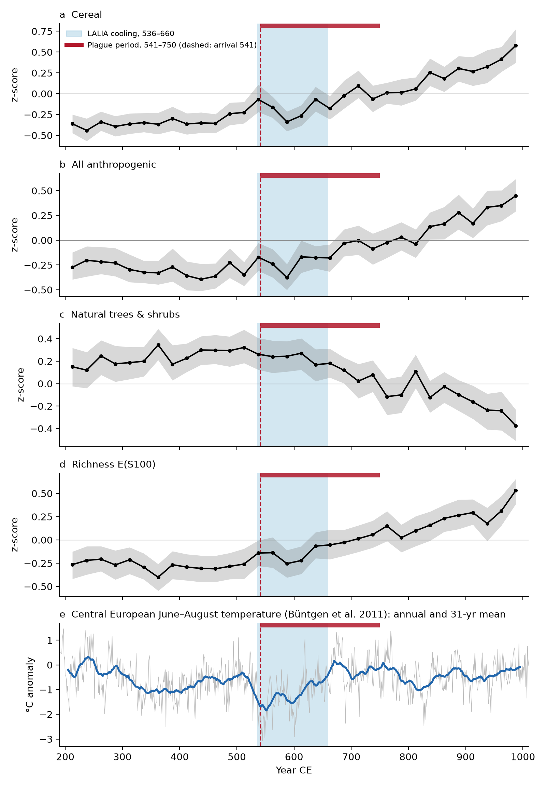
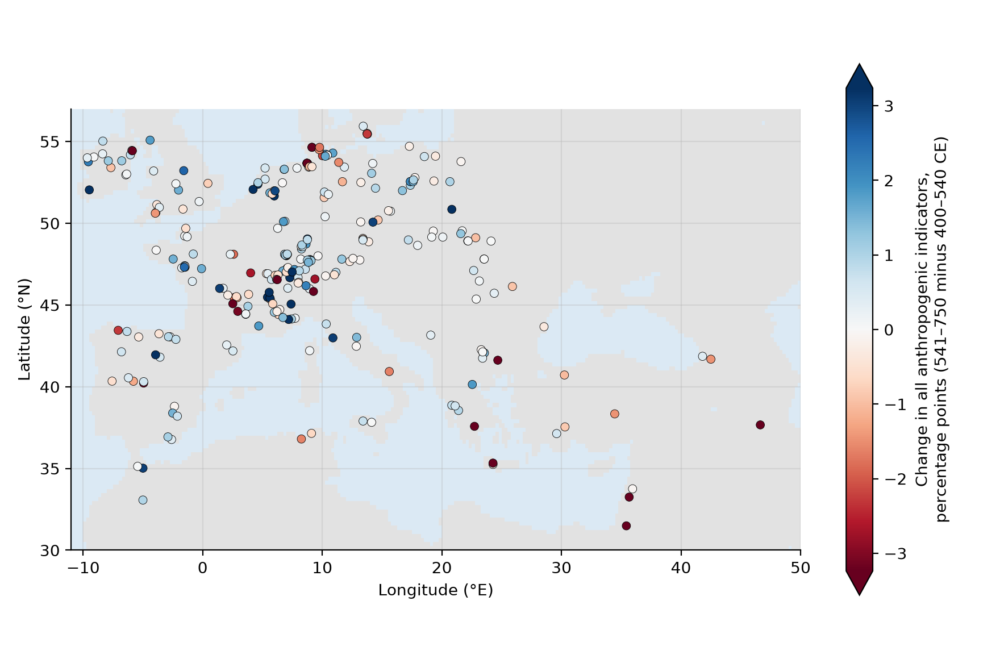
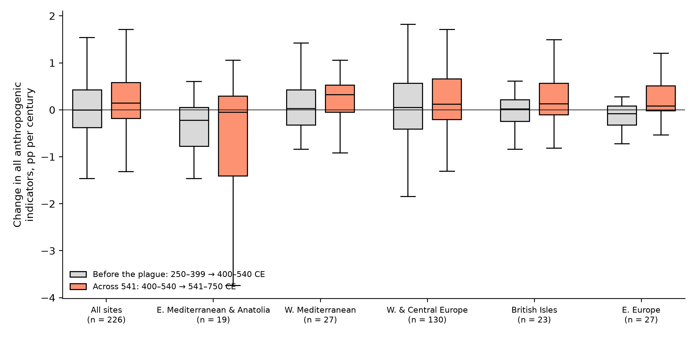
| Test | Windows (CE) | n | Cereal | Pastoral | All anthropogenic | Natural trees |
|---|---|---|---|---|---|---|
| Main comparison | 400–540 → 541–750 | 281 | +0.06 (< 0.001) | +0.08 (< 0.001) | +0.28 (< 0.001) | −0.70 (0.004) |
| Narrower windows | 450–540 → 541–640 | 135 | 0.00 (0.046) | +0.09 (0.019) | +0.21 (0.029) | −0.60 (0.048) |
| First 60 years of plague only | 450–540 → 541–600 | 79 | 0.00 (0.24) | +0.07 (0.37) | +0.05 (0.40) | −0.73 (0.28) |
| Boundary 50 years earlier | 350–490 → 491–700 | 288 | +0.06 (< 0.001) | +0.05 (0.008) | +0.14 (< 0.001) | −0.43 (0.040) |
| Boundary 50 years later | 450–590 → 591–800 | 288 | +0.05 (< 0.001) | +0.10 (< 0.001) | +0.26 (< 0.001) | −1.62 (< 0.001) |
| Plague period vs following period | 541–750 → 751–900 | 302 | +0.09 (< 0.001) | +0.18 (< 0.001) | +0.37 (< 0.001) | −1.97 (< 0.001) |
| Placebo: rate across 541 vs rate before | ||||||
| Region | n | Cereal | Pastoral | All anthropogenic | Natural trees | |
| All sites | 226 | +0.04 vs 0.00 (0.007) | +0.05 vs −0.01 (0.002) | +0.14 vs 0.00 (0.007) | −0.51 vs +0.11 (0.012) | |
| W. & Central Europe | 130 | +0.06 vs +0.05 (0.090) | +0.05 vs −0.03 (0.032) | +0.12 vs +0.06 (0.061) | −0.41 vs +0.19 (0.13) | |
| W. Mediterranean | 27 | +0.02 vs 0.00 (0.84) | +0.07 vs 0.00 (0.24) | +0.33 vs +0.03 (0.37) | −2.13 vs −0.16 (0.26) | |
| E. Europe | 27 | +0.01 vs 0.00 (0.018) | +0.11 vs −0.06 (0.003) | +0.09 vs −0.08 (0.005) | −0.76 vs +0.25 (0.010) | |
| British Isles | 23 | 0.00 vs 0.00 (0.55) | +0.10 vs +0.06 (0.45) | +0.13 vs +0.02 (0.45) | −1.38 vs −0.64 (0.87) | |
| E. Mediterranean & Anatolia | 19 | 0.00 vs 0.00 (0.16) | 0.00 vs +0.02 (0.74) | −0.05 vs −0.22 (0.89) | −0.32 vs +0.12 (0.59) | |
4.2 Regional patterns
The Europe-wide result is carried by western and central Europe, where the 161 sites show significant increases in cereal, pastoral and all anthropogenic pollen and a fall in natural tree pollen (Table 2, Fig. 5). Eastern Europe shows significant increases in cereal (p = 0.048), pastoral (p = 0.015) and all anthropogenic indicators (p = 0.011), faster than in the preceding period (placebo p = 0.005 for all anthropogenic indicators), a timing that matches the spread of Slavic settlement in the 6th and 7th centuries. In the western Mediterranean cultivated trees increased (p = 0.026). The British Isles show no significant change. In the Eastern Mediterranean no farming indicator changes significantly; only richness falls (p = 0.038). Section 4.7 shows that the regional results outside western and central Europe are not robust to dating uncertainty.
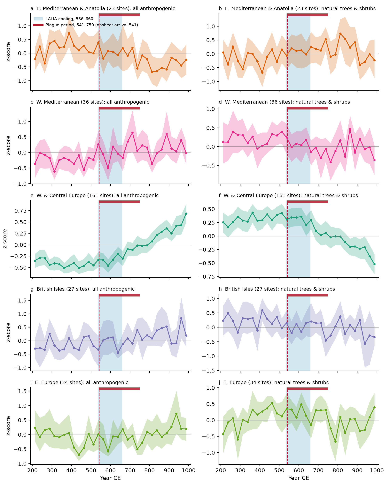
4.3 Regional climate
Between 400–535 and 536–660 CE the PAGES 2k European mean cooled by 0.25 °C (CPS) and 0.32 °C (BHM), about half the 0.61 °C cooling in the Alpine series (Fig. 6a). In the European mean the 4th century (300–399 CE: −0.37 °C, CPS) was as cool as the LALIA (−0.34 °C); in the Alpine series it was not (−0.96 against −1.23 °C). The reconstruction is uncertain: the median half-width of the BHM 95% range over 300–900 CE is 0.93 °C. At Kocain Cave, moisture peaked in 350–375 CE, fell below its long-term mean by 450–475 CE and was lowest in 575–600 CE (mean δ18O −3.56‰ in 541–660 against −4.09‰ in 330–460; Fig. 6b), as Jacobson et al. (2021) report. Soreq Cave in Israel does not show this sequence (mean δ18O −6.19‰ in 541–660 and −6.19‰ in 330–460), although it has only 4 measurements in 541–660. The Eastern Mediterranean was not one climate region in Late Antiquity, and its record for the 6th century is thin.
Over 200–1000 CE the composite of all anthropogenic indicators outside the Eastern Mediterranean correlates with European temperature (r = 0.47, p = 0.047; after removing linear trends r = 0.40, p = 0.055). The association comes from the start and end of the record: within 300–900 CE the detrended correlation is r = 0.00. In the Eastern Mediterranean the composites do not correlate with Kocain after detrending (cultivated trees r = −0.12, p = 0.54). They do correlate with Soreq (detrended r = 0.56 for all anthropogenic indicators, p = 0.002), in the unexpected sense of more farming pollen in drier centuries; this rests on a sparse, partly interpolated series and is one of 1,008 correlations we computed, so we treat it as unexplained rather than as evidence of a climate effect.
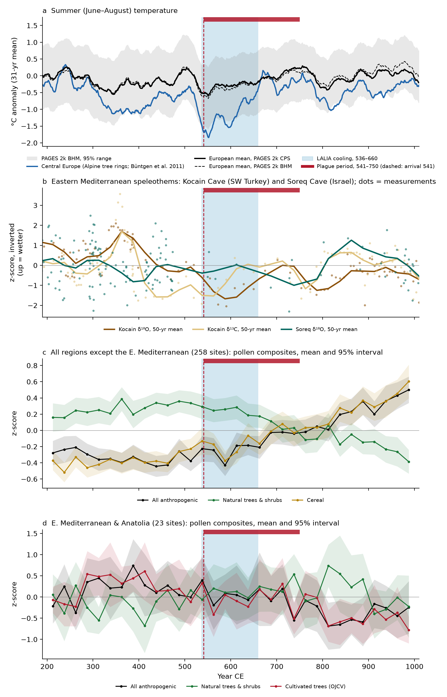
4.4 Separating the plague period from temperature
Once site differences and the long-term trend are accounted for, temperature has no detectable effect on any indicator over 300–900 CE (Table 4, Fig. 7a): one standard deviation of warmer European summers changes all anthropogenic indicators by −0.005 SD (p = 0.78). The trend is strong: the farming indicators rose by about 0.11 SD per century. Against that trend the plague period as a whole sits slightly low (all anthropogenic indicators −0.08 SD, p = 0.065). Splitting it shows where the shortfall lies: in the first century, 550–650 CE, when the early plague waves and the LALIA coincided, all anthropogenic indicators were 0.12 SD below trend (p = 0.024), cereal 0.12 SD (p = 0.034), pastoral indicators 0.12 SD (p = 0.033), and natural trees 0.11 SD above (p = 0.033). In 650–750 CE, when plague still recurred but the climate had warmed, the shortfall shrinks to −0.03 SD (p = 0.47). By region (Fig. 7c) the first-century shortfall in all anthropogenic indicators is significant only in western and central Europe (−0.17 SD, p = 0.007); eastern Europe has a comparable estimate (−0.19 SD) that is not significant with 33 sites (p = 0.10), and the other regions show no shortfall.
In no variant within 300–900 CE does temperature have a significant effect on any indicator (Alpine temperature, lagged temperature, quadratic trend), and in the Eastern Mediterranean Kocain moisture has no effect either (M7). Two checks pull in opposite directions. With a quadratic trend, which lets slower growth before 700 and faster growth afterwards follow a curve, the plague-period effect vanishes (+0.01 SD, p = 0.76), so the shortfall may be part of a slower 6th–7th-century expansion rather than a discrete event. Widening the window to 200–1000 CE does the opposite: temperature then has a small positive effect (+0.04 SD per SD of warming, p = 0.022), coming from the centuries outside 300–900 CE, and the plague-period shortfall grows (−0.12 SD, p = 0.009). The shortfall is therefore not a product of cooling as reconstructed, but its size depends on how the long-term trend is modelled. The first-century terms have p-values between 0.024 and 0.034 and are 4 of 372 coefficients we estimated, so they are evidence of a modest pause, not of a strong effect.
| Model and term | All anthropogenic | Cereal | Pastoral | Natural trees |
|---|---|---|---|---|
| M1: temperature + plague period + trend, 300–900 CE | ||||
| Temperature (+1 SD) | −0.005 (0.78) | −0.005 (0.77) | −0.021 (0.36) | −0.016 (0.44) |
| Plague period, 550–750 | −0.077 (0.065) | −0.080 (0.071) | −0.086 (0.052) | +0.081 (0.053) |
| Trend (per century) | +0.112 (< 0.001) | +0.122 (< 0.001) | +0.103 (< 0.001) | −0.076 (< 0.001) |
| M2: plague period in two halves | ||||
| First century, 550–650 | −0.116 (0.024) | −0.119 (0.034) | −0.120 (0.033) | +0.110 (0.033) |
| Second century, 650–750 | −0.033 (0.47) | −0.037 (0.48) | −0.049 (0.36) | +0.049 (0.30) |
| Plague-period term (550–750) in the variants | ||||
| M3: Alpine temperature instead | −0.076 (0.056) | −0.080 (0.069) | −0.084 (0.051) | +0.078 (0.063) |
| M4: + temperature lagged 25 yr | −0.082 (0.068) | −0.084 (0.064) | −0.097 (0.031) | +0.075 (0.093) |
| M5: quadratic trend | +0.013 (0.76) | −0.029 (0.60) | +0.038 (0.39) | −0.010 (0.83) |
| M6: no climate term | −0.077 (0.065) | −0.080 (0.070) | −0.085 (0.055) | +0.082 (0.050) |
| M7: + Kocain moisture, Eastern Mediterranean sites only | ||||
| Kocain moisture (+1 SD wetter) | −0.018 (0.80) | −0.017 (0.85) | −0.103 (0.23) | +0.056 (0.51) |
| Plague period, 550–750 | +0.104 (0.43) | −0.084 (0.59) | +0.061 (0.70) | +0.108 (0.51) |
| M8: as M1, 200–1000 CE | ||||
| Temperature (+1 SD) | +0.043 (0.022) | +0.018 (0.25) | +0.045 (0.098) | −0.049 (0.006) |
| Plague period, 550–750 | −0.118 (0.009) | −0.113 (0.015) | −0.124 (0.010) | +0.120 (0.006) |
| Sites / site-bins in M1 | ||||
| All sites, 300–900 CE | 280 / 3,312 | 258 / 3,087 | 270 / 3,208 | 281 / 3,320 |
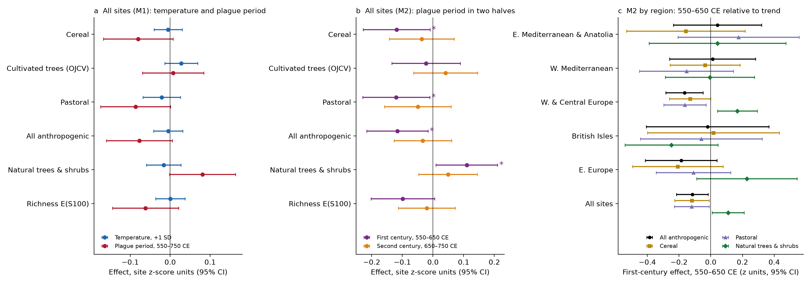
4.5 The expanded Eastern Mediterranean sample
Recovering polygon-stored and calendar-dated records, and pooling cores, raised the Eastern Mediterranean core sample from 13 to 23 sites (Fig. 8a). No farming indicator changes significantly after 541 in any version of the sample (Table 5). Cultivated trees declined at 61% of the core sites, but the median change is small (−0.07 points), and the large declines come from sites where olive was important before the plague: Dead Sea 7 (−13 points from 20%), Lake Kournas on Crete (−8.2 points from 28%) and Lake Lerna in the Peloponnese (−5.1 points from 7%; Fig. 9). In the relaxed sample of 52 sites, cultivated trees declined at 48%. Richness fell at 74% of the core sites (p = 0.038), but not in the relaxed sample (p = 0.49). The cultivated-tree composite peaked in 400–425 CE and was lower in 425–540 than before (mean z 0.14 against 0.48 in 300–425; Fig. 6d), more than a century before the plague.
| Sample | n | Cereal | Pastoral | Cultivated trees | All anthropogenic | Natural trees | Richness |
|---|---|---|---|---|---|---|---|
| Mid-term core sites, as reported | 13 | 0.00 (0.86) | 0.00 (0.69) | −0.42 (0.15) | −0.06 (0.38) | +5.06 (0.38) | −1.20 (0.094) |
| Mid-term core sites, final data | 13 | 0.00 (0.86) | 0.00 (0.69) | −0.42 (0.15) | −0.06 (0.38) | +5.06 (0.38) | −1.20 (0.094) |
| Final core, ≥2 samples per window | 23 | 0.00 (0.69) | 0.00 (0.49) | −0.07 (0.12) | −0.08 (0.18) | +2.49 (0.39) | −0.92 (0.038) |
| Relaxed, ≥1 sample per window | 52 | 0.00 (0.95) | 0.00 (0.87) | 0.00 (0.33) | −0.07 (0.43) | +1.93 (0.40) | −0.14 (0.49) |
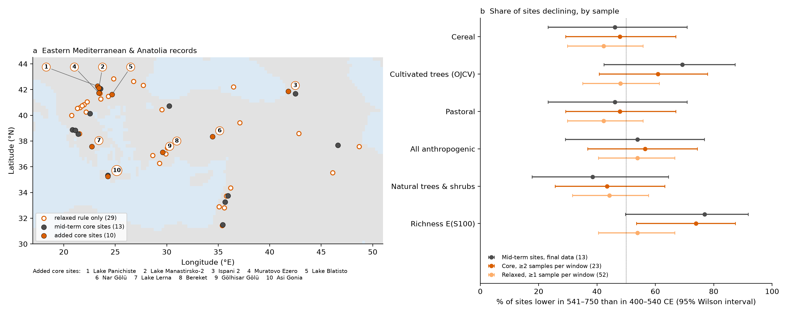
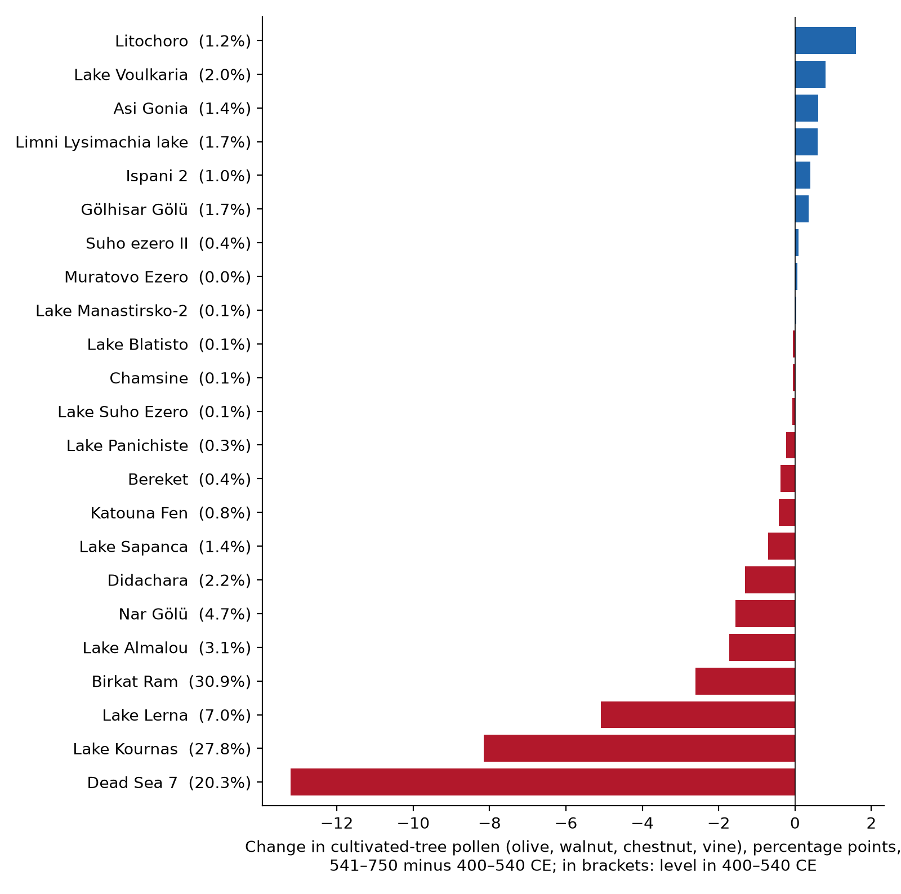
4.6 HYDE 3.2 against the pollen
Around the pollen sites, HYDE's cropland shrinks from 131% of its 500 CE level in 200 CE to 88% in 600 CE and recovers to 137% by 1000 CE; its population follows the same path (Fig. 10c), because HYDE derives land use from population. The pollen does not show this decline: the farming indicators rise from about 475 CE. Over the plague window HYDE has cropland falling at 85% of sites (median −5.9%), most steeply in the British Isles (−37.8%) and the Eastern Mediterranean (−18.7%), while cereal pollen fell at 30% (Table 6, Fig. 10d). HYDE cropland and cereal pollen moved in the same direction at 40% of the sites where both changed, and the size of the changes is unrelated (Spearman ρ = 0.04). HYDE grazing land behaves differently: it rises after 600 CE (to 404% of its 500 CE value by 1000 CE), rises across 541 at 70% of sites (median +35.6%) and moves in the same direction as pastoral pollen at 57% of sites. In space the agreement is weak: across sites in 400–540 CE, HYDE cropland within 50 km correlates with cereal pollen at ρ = 0.21 (p < 0.001) and HYDE grazing land not at all with pastoral pollen (ρ = 0.00).
| Region | n | HYDE cropland | HYDE grazing | HYDE population | HYDE cropland falls | Cereal pollen falls | Same direction, cropland–cereal | HYDE grazing rises | Pastoral pollen rises |
|---|---|---|---|---|---|---|---|---|---|
| All sites | 281 | −5.9% | +35.6% | −4.6% | 85% | 30% | 40% | 70% | 58% |
| W. & Central Europe | 161 | −5.9% | +37.9% | −3.9% | 97% | 32% | 36% | 95% | 60% |
| W. Mediterranean | 36 | −1.2% | −15.1% | −13.0% | 58% | 22% | 46% | 17% | 53% |
| E. Europe | 34 | +10.3% | +15.0% | −1.9% | 44% | 32% | 59% | 59% | 62% |
| British Isles | 27 | −37.8% | −39.4% | −34.8% | 100% | 15% | 24% | 44% | 56% |
| E. Mediterranean & Anatolia | 23 | −18.7% | −6.7% | −15.3% | 91% | 48% | 53% | 30% | 48% |
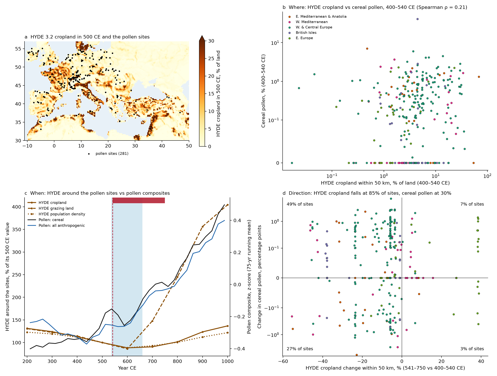
4.7 Robustness to dating uncertainty
Moving ages within their errors shifts samples across the window boundaries, so a typical realisation keeps 242 core sites. The main Europe-wide results survive (Table 7, Fig. 11): the rise in cereal pollen is significant in 100% of 1,000 realisations, the rise in all anthropogenic indicators in 98%, the rise in richness in 96%, the fall in natural tree pollen in 95% and the rise in pastoral indicators in 90%. The rise in cultivated trees is not robust (56%). Western and central Europe behaves the same way (cereal 100%, all anthropogenic 99.7%). With errors 1.5 times larger, cereal and all anthropogenic indicators stay above 95%, natural trees reach 88% and pastoral indicators 79%. Elsewhere the regional results do not survive: the rise of cultivated trees in the western Mediterranean is significant in 33% of realisations and the eastern European rise in all anthropogenic indicators in 14%. In the Eastern Mediterranean no change is significant in most realisations (cultivated trees 25%, all anthropogenic 24%, richness 16%), so even the fall in richness depends on the published ages.
| Indicator | All sites | All, independent errors | All, errors × 1.5 | W. & Central Europe | W. Mediterranean | E. Europe | E. Med, core | E. Med, relaxed |
|---|---|---|---|---|---|---|---|---|
| Cereal | ↑ 100% | ↑ 100% | ↑ 100% | ↑ 100% | ↑ 4% | ↑ 18% | ↓ 9% | ↓ 12% |
| Pastoral | ↑ 90% | ↑ 96% | ↑ 79% | ↑ 93% | ↑ 11% | ↑ 11% | ↓ 4% | ↓ 2% |
| Cultivated trees | ↑ 56% | ↑ 55% | ↑ 47% | ↑ 74% | ↑ 33% | ↑ 2% | ↓ 25% | ↓ 15% |
| All anthropogenic | ↑ 98% | ↑ 99% | ↑ 96% | ↑ 100% | ↑ 19% | ↑ 14% | ↓ 24% | ↓ 25% |
| Natural trees | ↓ 95% | ↓ 97% | ↓ 88% | ↓ 92% | ↓ 18% | ↓ 12% | ↑ 9% | ↑ 7% |
| Richness | ↑ 96% | ↑ 98% | ↑ 91% | ↑ 98% | ↑ 12% | ↑ 6% | ↓ 16% | ↓ 14% |
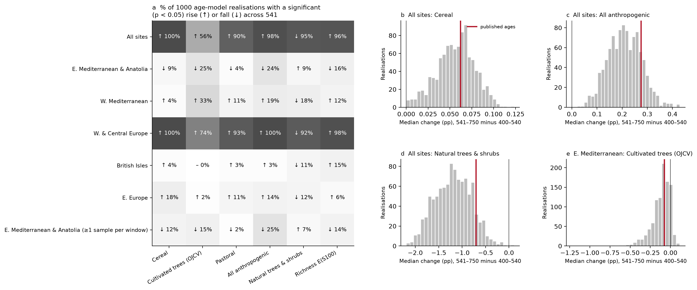
5Discussion
5.1 No continental footprint of abandonment
If the First Pandemic had killed a large share of the rural population everywhere, fields would have gone out of use and woodland would have spread back within decades, as happened in parts of Europe after the Black Death (Izdebski et al. 2022). The pollen shows the reverse across most of Europe: farming indicators rose after 541 and tree pollen fell, faster than before, and the result does not depend on where the boundary is drawn or on dating errors. It agrees with Mordechai et al. (2019), who found no measurable aggregate effect on the rural economy. It does not mean nobody died. Pollen records land use, not mortality (Curtis 2022): mortality may have been concentrated in cities and along trade routes, where few pollen records lie, or survivors may have taken over vacant land quickly enough that the vegetation never registered a gap. The first 60 years of plague alone show no significant change in either direction.
5.2 A pause in the first century of plague
The expansion of farming was not smooth. Relative to its trend, land use stalled in 550–650 CE and was back on trend in 650–750. Both the first and deadliest plague waves and the coldest LALIA decades fall in this century, so the pause cannot be assigned to one of them from timing alone. Three observations argue against a direct temperature effect: reconstructed temperature explains none of the variation in the indicators over 300–900 CE in any specification; the 4th century was as cool as the LALIA in the European mean yet shows no shortfall; and the Alpine series, which records about twice the cooling, fits no better. Reconstruction error in temperature would bias its estimated effect towards zero, so a small effect cannot be ruled out, but a cold-driven collapse can. The size of the pause depends on how the long-term trend is modelled. The most defensible reading is a short interruption of an expansion already under way, in the decades when both shocks coincided, with no lasting effect.
5.3 The Eastern Mediterranean
The Eastern Mediterranean is where plague mortality is best documented and where the mid-term analysis found the clearest signal, a decline in arboriculture. With 23 core sites, and 52 under the relaxed rule, no farming indicator declines significantly after 541, the decline of cultivated trees is driven by a few sites with intensive olive cultivation, and the cultivated-tree composite was already lower after about 425 CE. Kocain Cave records moisture falling over the same period, but the composites do not correlate with it after detrending and the regression finds no moisture effect, so a climatic cause is possible but not demonstrated; Soreq Cave shows no drying. Archaeobotanical evidence from the Negev dates the collapse of commercial viticulture to the mid to late 6th century and attributes it mainly to market contraction (Fuks et al. 2020); our sample has no site in that area, and the region's sites span the Balkans, Anatolia, the Levant, the Caucasus and north-western Iran, so a regional average cannot exclude local declines of this kind.
5.4 What HYDE gets wrong
HYDE is widely used to prescribe historical land use in climate and carbon-cycle models. Its cropland follows its population input, which encodes a demographic decline from the 3rd to the 6th century reaching its lowest point around 600 CE. The pollen does not show this decline in western, central or eastern Europe, where farming grew from the late 5th century onward, and HYDE's map agrees only weakly with where cereals and pasture actually were. HYDE grazing land, which rises from 600 CE, is closer to the pollen. Kaplan et al. (2017) reached a related conclusion from pollen-based land-cover reconstructions, which match HYDE poorly for the more distant past. For the first millennium, HYDE's cropland dynamics should be treated as a hypothesis built from population estimates, not as an observation.
5.5 Limitations
Pollen percentages are relative, so a fall in tree pollen can reflect forest change without more farming. Cereal pollen travels poorly and is under-represented, and sites differ in pollen source area. Most core sites have only three or four samples in each window, and dating uncertainty is comparable to the window length; the Monte Carlo shows that the main results survive this, but individual site changes are not precisely timed, and individual plague waves (541–544, 558, 573 and later) cannot be resolved. Some sites lie a few kilometres apart and are not fully independent. The plague-period term captures everything else that happened in 550–750 CE, including the Lombard invasion of Italy, Avar and Slavic movements in the Balkans, the Persian–Byzantine war and the Arab conquests in the Levant. No regional temperature reconstruction covers the Mediterranean or eastern Europe in the 6th century, the European mean is uncertain by about ±0.9 °C, and the two Eastern Mediterranean caves disagree. HYDE has 100-year resolution and was not designed for site-scale accuracy. The project brief also lists archaeological datasets; we did not use them because no open, harmonised settlement or plague-occurrence dataset covers the whole study area at the needed resolution, so the comparison rests on pollen, climate reconstructions and HYDE. The sample remains dominated by western and central Europe, and the Eastern Mediterranean group, with 23 sites from the Balkans to Iran, is small for a region this varied.
6Conclusions
Across 281 pollen sites, land use in Europe and the Mediterranean did not contract after the arrival of plague in 541. Farming expanded through the 6th to 8th centuries, with a modest pause in 550–650 CE that reconstructed temperature does not explain and that we cannot attribute firmly to either the plague or the LALIA. The Eastern Mediterranean, even with an expanded sample, shows no significant post-541 decline; its cultivated-tree pollen was already lower from about 425 CE. HYDE 3.2 cropland, built on historical population estimates, moves opposite to the pollen. The main Europe-wide results are robust to dating uncertainty; the regional results outside western and central Europe are not. The First Pandemic may have been demographically severe, but it left no continental footprint of farmland abandonment in the pollen record.
7Changes since the mid-term evaluation
- Sample. The query now accepts calendar, varve and AD/BC chronologies and polygon-stored records (862 of the 891 mid-term datasets usable, previously 671; 1,099 datasets in the new query). We removed 14 duplicate records and pooled cores from the same site, as planned at mid-term; core sites rose from 159 (164 records) to 281 (335 records), and all mid-term sites remain. Between the two downloads Neotoma revised 19 of the mid-term records (new age models or corrected counts), changing or removing 284 of their samples.
- Windows and tests. Window edges are now half-open, so no sample falls between windows; the placebo test compares rates of change per century; a test of the first 60 years of plague (541–600 CE), planned at mid-term, was added.
- New analyses. Regional climate (PAGES 2k Euro-Med, Kocain and Soreq caves), fixed-effects regression, the expanded Eastern Mediterranean sample, the Monte Carlo on dating uncertainty and the HYDE 3.2 comparison (Figs 6–11).
- Results that held. The Europe-wide rise of the farming indicators and fall of natural tree pollen: all anthropogenic indicators +0.20 points (p = 0.011) at mid-term, +0.28 (p < 0.001) now. The placebo test, not significant for all anthropogenic indicators at mid-term (p = 0.27, raw changes), is now significant (p = 0.007, rates).
- Results that changed. Richness, which fell slightly and not significantly at mid-term (−0.03 taxa), now rises (+0.29, p = 0.002). At mid-term we concluded that the pandemic left "a regional, not continental, mark, strongest in the eastern Mediterranean tree-crop economy". We no longer support the regional part: the arboriculture decline (−0.42 points with 13 sites) shrinks to −0.07 points with 23 sites, is not significant, began before the plague and does not survive the Monte Carlo.
8Reproducibility
Every number, table and figure in this report is produced by the code in the project repository; the report itself is written by code/report.py from the result tables. ./run.sh reruns the analysis offline from the files in data/ in about two minutes; ./run.sh --full first downloads the Neotoma records (about 500 MB), reads the HYDE grids from the DANS archive and fetches the NOAA climate series. Package versions are pinned in requirements.txt (Python 3 with pandas, numpy, scipy and matplotlib; requests and inflate64 for the full rebuild); small-sample Wilcoxon p-values can differ in the second decimal with other SciPy versions.
References
- Behre, K.-E. (1981). The interpretation of anthropogenic indicators in pollen diagrams. Pollen et Spores, 23, 225–245.
- Bretherton, C. S., Widmann, M., Dymnikov, V. P., Wallace, J. M., & Bladé, I. (1999). The effective number of spatial degrees of freedom of a time-varying field. Journal of Climate, 12, 1990–2009.
- Büntgen, U., Tegel, W., Nicolussi, K., et al. (2011). 2500 years of European climate variability and human susceptibility. Science, 331, 578–582.
- Büntgen, U., Myglan, V. S., Ljungqvist, F. C., et al. (2016). Cooling and societal change during the Late Antique Little Ice Age from 536 to around 660 AD. Nature Geoscience, 9, 231–236.
- Cameron, A. C., Gelbach, J. B., & Miller, D. L. (2011). Robust inference with multiway clustering. Journal of Business & Economic Statistics, 29, 238–249.
- Curtis, D. R. (2022). Reduction in grain pollen indicates population decline, but not necessarily Black Death mortality. Nature Ecology & Evolution, 6, 1626–1627.
- England, A., Eastwood, W. J., Roberts, C. N., Turner, R., & Haldon, J. F. (2008). Historical landscape change in Cappadocia (central Turkey): a palaeoecological investigation of annually laminated sediments from Nar lake. The Holocene, 18, 1229–1245.
- Fuks, D., Bar-Oz, G., Tepper, Y., Erickson-Gini, T., Langgut, D., Weissbrod, L., & Weiss, E. (2020). The rise and fall of viticulture in the Late Antique Negev Highlands reconstructed from archaeobotanical and ceramic data. Proceedings of the National Academy of Sciences, 117, 19780–19791.
- Hurlbert, S. H. (1971). The nonconcept of species diversity: a critique and alternative parameters. Ecology, 52, 577–586.
- Izdebski, A., Guzowski, P., Poniat, R., et al. (2022). Palaeoecological data indicates land-use changes across Europe linked to spatial heterogeneity in mortality during the Black Death pandemic. Nature Ecology & Evolution, 6, 297–306.
- Jacobson, M. J., Flohr, P., Gascoigne, A., Leng, M. J., Sadekov, A., Cheng, H., Edwards, R. L., Tüysüz, O., & Fleitmann, D. (2021). Heterogenous late Holocene climate in the Eastern Mediterranean: the Kocain Cave record from SW Turkey. Geophysical Research Letters, 48, e2021GL094733.
- Kaniewski, D., Paulissen, E., De Laet, V., Dossche, K., & Waelkens, M. (2007). A high-resolution Late Holocene landscape ecological history inferred from an intramontane basin in the Western Taurus Mountains, Turkey. Quaternary Science Reviews, 26, 2201–2218.
- Kaplan, J. O., Krumhardt, K. M., Gaillard, M.-J., et al. (2017). Constraining the deforestation history of Europe: evaluation of historical land use scenarios with pollen-based land cover reconstructions. Land, 6, 91.
- Keller, M., Spyrou, M. A., Scheib, C. L., et al. (2019). Ancient Yersinia pestis genomes from across Western Europe reveal early diversification during the First Pandemic (541–750). Proceedings of the National Academy of Sciences, 116, 12363–12372.
- Klein Goldewijk, K., Beusen, A., Doelman, J., & Stehfest, E. (2017). Anthropogenic land use estimates for the Holocene – HYDE 3.2. Earth System Science Data, 9, 927–953. Data: doi:10.17026/dans-25g-gez3.
- Little, L. K. (Ed.) (2007). Plague and the End of Antiquity: The Pandemic of 541–750. Cambridge University Press.
- Luterbacher, J., Werner, J. P., Smerdon, J. E., et al. (2016). European summer temperatures since Roman times. Environmental Research Letters, 11, 024001.
- Mercuri, A. M., Bandini Mazzanti, M., Florenzano, A., Montecchi, M. C., & Rattighieri, E. (2013). Olea, Juglans and Castanea: the OJC group as pollen evidence of the development of human-induced environments in the Italian peninsula. Quaternary International, 303, 24–42.
- Mordechai, L., Eisenberg, M., Newfield, T. P., Izdebski, A., Kay, J. E., & Poinar, H. (2019). The Justinianic Plague: an inconsequential pandemic? Proceedings of the National Academy of Sciences, 116, 25546–25554.
- Orland, I. J., Bar-Matthews, M., Kita, N. T., Ayalon, A., Matthews, A., & Valley, J. W. (2009). Climate deterioration in the Eastern Mediterranean as revealed by ion microprobe analysis of a speleothem that grew from 2.2 to 0.9 ka in Soreq Cave, Israel. Quaternary Research, 71, 27–35.
- Sigl, M., Winstrup, M., McConnell, J. R., et al. (2015). Timing and climate forcing of volcanic eruptions for the past 2,500 years. Nature, 523, 543–549.
- Williams, J. W., Grimm, E. C., Blois, J. L., et al. (2018). The Neotoma Paleoecology Database, a multiproxy, international, community-curated data resource. Quaternary Research, 89, 156–177.